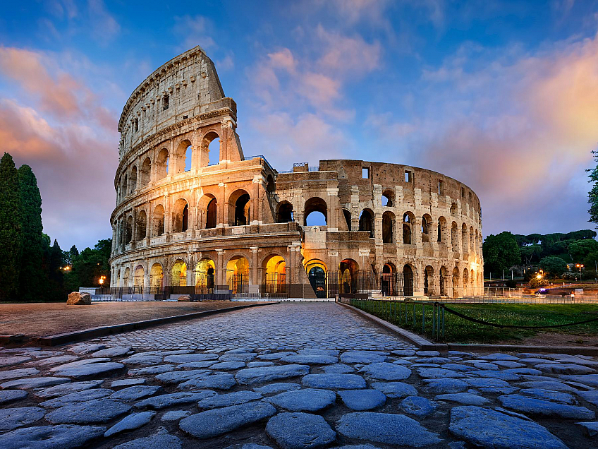

Řím – Věčné město historie

Proč navštívit Řím?
Řím je živoucí muzeum pod širým nebem. Na každém rohu narazíte na antické památky, renesanční náměstí nebo barokní fontány. A co víc – římská gastronomie je vyhlášená po celém světě. Vychutnejte si pravou italskou pizzu, čerstvé těstoviny a nejlepší zmrzlinu, jakou jste kdy ochutnali.
- Hlavní cíle: Koloseum, Vatikán, Fontána di Trevi
- Atmosféra: Procházky historickým centrem a večerní posezení v uličkách
- Doprava: Přímý let z Prahy
Cena: 16 500 Kč